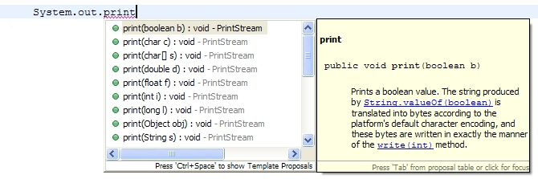
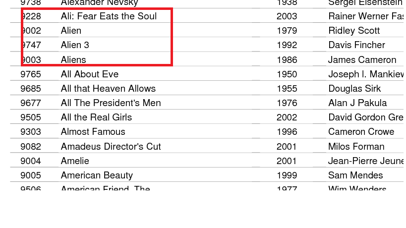

In this assignment you will write a java program which implements autocomplete for set of weighed strings. Your program will:
This Assigment is worth 20% of your overall mark for this module.
Autocomplete features in many applications such as search engines(Google), email programs etc. You would noticed the autocomplete mechanism in the Eclipse Java source code editor.

Your assignment is to develop a java program that reads in a list of strings(called terms) and associated weights from a URL or file and stores them in a suitable data structure. The user should then be able to enter a prefix string and the program should return a list of matching phrases that start with that text. All matching phrases should be displayed and the search should be case insensitive.
Most autocomplete application predict how likely it is that the user is typing each term. For this purpose, each term has a weight and your program will use these to compute a list of the top matching terms, in decreasing order of weight.
The weights are calculated using various data, such as number of plays for movie streaming services, frequencies of search queries from other Google users, or the typing history of a smart phone user. In this assignment, you will be given a list of all terms and associated weights (and the terms and weights will not change).
The performance of autocomplete functionality is critical in many systems. For example, the Google search engine runs an autocomplete application. It also performs this computation for every keystroke typed into the search bar and for every user! Therefore application has to return a list of suggestions in a short time for it to be useful to the user. It also performs this computation for every keystroke typed into the search bar and for every user!
You will implement autocomplete in two different ways.
As you will know from using autocomplete, speed is important.
Write an data type BruteAutoComplete.java that implements the interface shown below. Your brute-force implementation should maintain the terms and weights in a suitable implementation of List.
public interface AutoComplete{
// Returns the weight of the term, or 0.0 if no such term.
public double weightOf(String term);
// Returns the highest weighted matching term, or null if no matching term.
public String bestMatch(String prefix);
// Returns the highest weighted k matching terms (in descending order of weight), as an
// iterable.
// If fewer than k matches, return all matching terms (in descending order
// of weight).
public Iterable<String> matches(String prefix, int k);
}Each method and constructor should throw a NullPointerException if any argument is null.
Your constructor for BruteAutocomplete should be subquadratic , and your bestMatch() and matches() methods should be subquadratic.
Use the api to develop an end user application. This can be a simple command line interface that allows a user to access the functionality in the Autocomplete API.
You are provided with the following weighed data adapted from Wiktionary. The file contains the 10,000 most common words along with weights equal to their frequencies. You will have to write your own code that can parse the data. There is one term per line, with the weight and term separated by a tab. The terms can be arbitrary strings consisting of Unicode characters, including spaces (but not newlines).
The following code example, contained in the class resources repo, uses the Scanner class to read in a text file line by line, parse the data, and print the data to the standard output:
File usersFile = new File("./data/userdata.txt");
Scanner inUsers = new Scanner(usersFile);
String delims = "[ ]";//each field in the file is separated(delimited) by a space.
while (inUsers.hasNextLine()) {
// get user and rating from data source
String userDetails = inUsers.nextLine();
// parse user details string
String[] userTokens = userDetails.split(delims);
// output user data to console.
if (userTokens.length == 2) {
System.out.println("UserID: " + userTokens[0] + ",First Name:" + userTokens[1]);
}else
{
inUsers.close();
throw new Exception("Invalid member length: "+userTokens.length);
}
}
inUsers.close();The above code produces output similar to the following:
UserID: 1,First Name:bob UserID: 2,First Name:jack UserID: 3,First Name:donald UserID: 4,First Name:mary
You will also need to design and implement a suitable data type(s) that will support the functionality of the program.
Approximately 20% of marks in this assignment is for the testing and test strategy. You are required to provide the following:
For the brute force solution, when N is large, the number of autocomplete queries that can be processed per second will be too small to be useful. You can use it as a reference when developing a faster solution. To improve on your brute force solution, think of ways to increase the efficiency of finding matching terms based on what you have covered in lectures and practicals so far. One approach you could take is use a suitable sorting algorithm to sort the list of terms. This should position matching terms(if any) in a continuous "block" in the list. You could then extract the matching sublist by searching for the first and last index position of the matching "block".

If you take this approach, try to come up with your own data type/API that provides this capability for a sorted list. (HINT: create an extension of Binary Search).
Please submit assignment as a Github or Bitbucket repository. The following are expected to be included:
All code should be internally documented and your repository should contain by a readme.md file that clearly and concisely explains the features of your program. General marking scheme, including above expectations, is as follows:
Load External Data: 10; Return Top Match: 10; Return List of Matches: 10; Return sorted list of k matches: 10; Github Repo: 10 (readme, project structure); FastAutoComplete: 20; CLI controller: 10; Testing: 20.